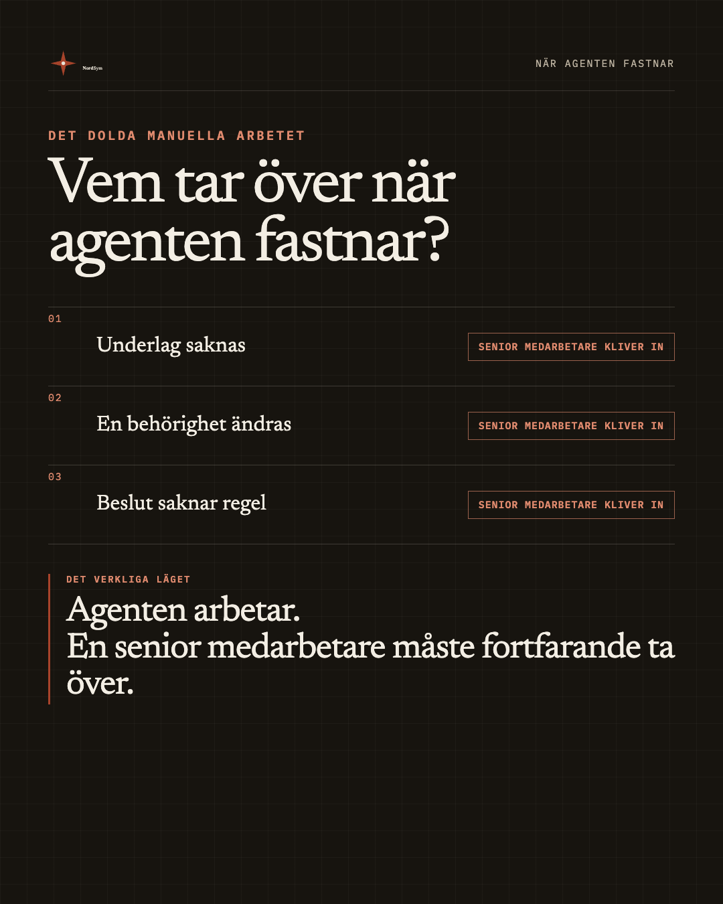

NordSym
Sponsrad · ◉
Om en senior medarbetare måste upptäcka och lösa varje avvikelse är arbetet fortfarande manuellt. Ni har bara flyttat det till personen som måste ta över.
NordSym kartlägger hur arbetet, systemen och besluten hänger ihop och visar vad som krävs för att agenten ska fungera i vardagen.

NORDSYM.COM
Vem tar över när agenten fastnar?
Läs mer
Se vad som saknas